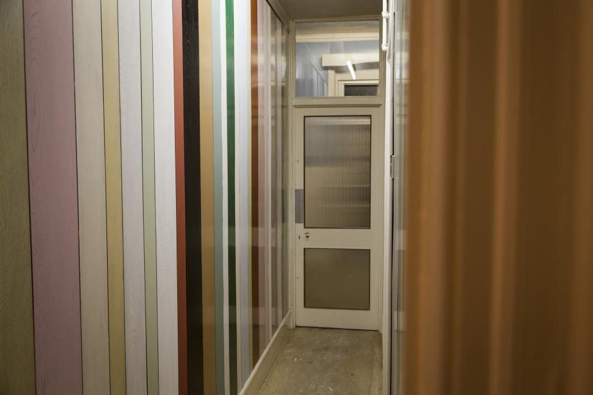
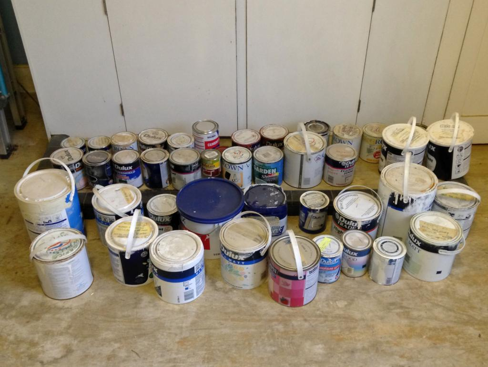

Life Is Long If You Know How to Live It


An installation using the accumulated paints and finishes of the late Dr John Slome, presented in his former home and medical practice in Willesden Green, London.
The work was part of In the Way of Being, curated by Gabriella Sonnabend. The colours and materials gathered through decades of domestic life were used to transform a corridor within the house.